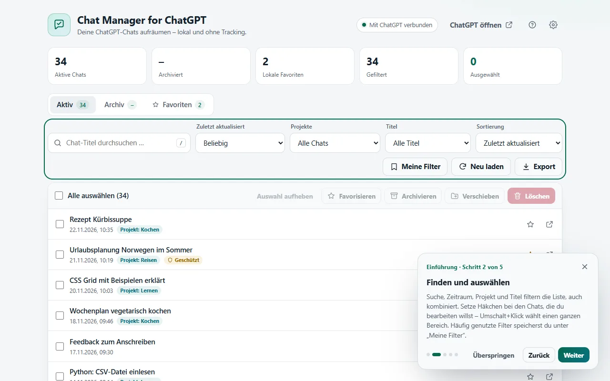
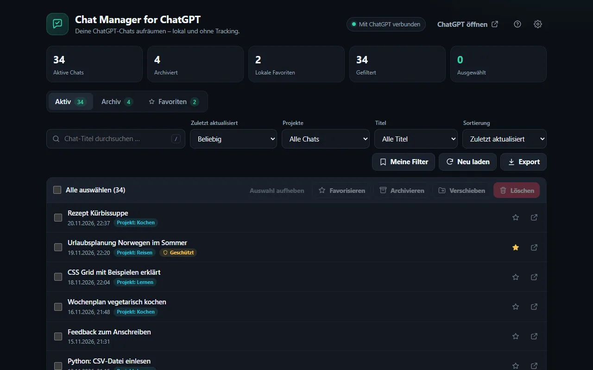
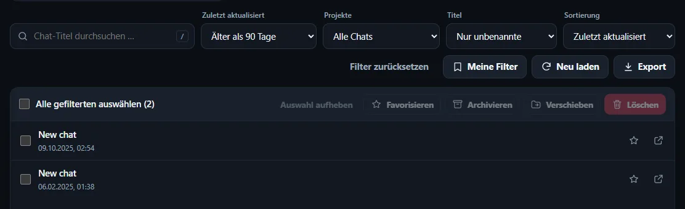
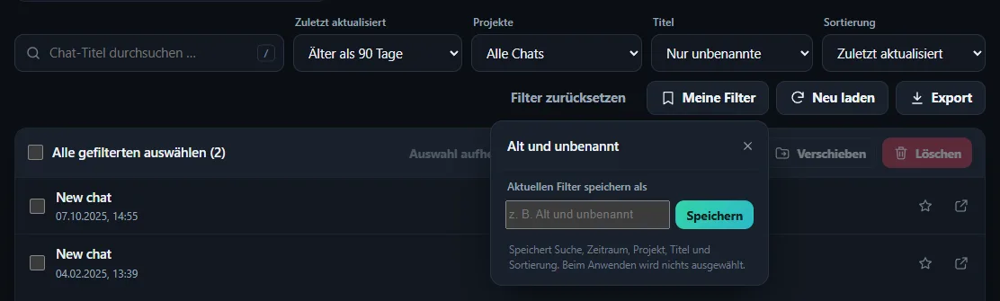
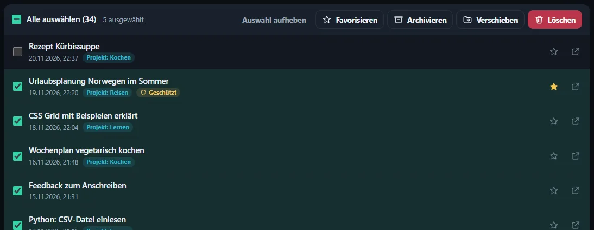
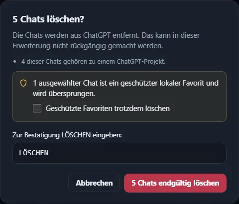
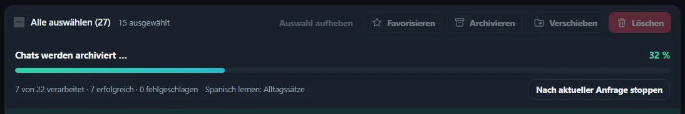
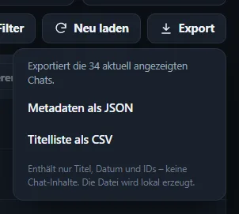
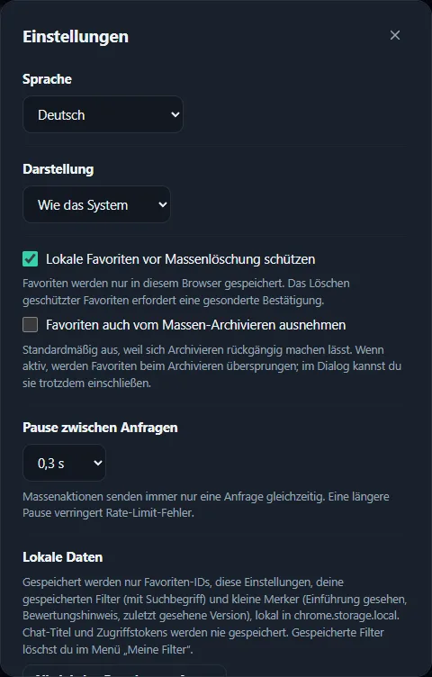

Handbuch
1. Erste Schritte
- Öffne chatgpt.com in einem Tab und melde dich an.
- Klicke in der Chrome-Symbolleiste auf das Symbol der Erweiterung (ggf. erst über das Puzzle-Symbol anheften). Der Manager öffnet sich in einem eigenen Tab. Ein zweiter Klick wechselt zum bereits offenen Manager.
- Oben rechts zeigt eine Anzeige den Verbindungsstatus. Bei „Mit ChatGPT verbunden“ lädt der Manager deine aktiven Chats.
Die Erweiterung hat keinen eigenen Server und kein eigenes Konto. Sie arbeitet mit deiner bestehenden Anmeldung im ChatGPT-Tab. Dieser Tab muss geöffnet bleiben, solange du den Manager benutzt.
Beim ersten Start erklärt eine kurze Einführung in fünf Schritten die wichtigsten Bereiche. Du kannst sie überspringen und später unter Einstellungen → Einführung erneut anzeigen wieder starten.

2. Die Oberfläche

- Statistik: Anzahl aktiver und archivierter Chats, lokaler Favoriten, der gerade gefilterten und der ausgewählten Chats. „–“ bedeutet: noch nicht geladen.
- Tabs: Aktiv, Archiv und Favoriten. Das Archiv wird beim ersten Öffnen des Tabs geladen, die Favoriten-Ansicht braucht beide Listen.
- Liste: Titel, Datum der letzten Änderung und Kennzeichen wie „Projekt: …“, „Archiviert“ oder „Geschützt“. Der Stern markiert einen Favoriten, das Pfeil-Symbol öffnet den Chat in ChatGPT. Angezeigt werden zunächst 300 Chats, weitere mit „… weitere anzeigen“.
- Neu laden holt die Liste erneut von ChatGPT. Das ist nach Änderungen in ChatGPT selbst sinnvoll.
3. Suchen, filtern, sortieren

- Suche durchsucht die Chat-Titel, nicht die Inhalte. Die Taste / springt ins Suchfeld.
- Zuletzt aktualisiert: letzte 7, 30 oder 90 Tage, älter als 30, 90 oder 365 Tage oder ein eigener Zeitraum. Chats ohne Datum fallen bei jedem Zeitfilter heraus, damit sie nicht versehentlich in einer Massenaktion landen.
- Projekte: alle Chats, ohne Projekt-Chats, nur Projekt-Chats oder ein einzelnes ChatGPT-Projekt.
- Titel: „Nur unbenannte“ zeigt Chats ohne Titel oder mit ChatGPTs Standardtitel „New chat“ (so heißen neue Chats auch bei deutscher Oberfläche). Das sind oft Wegwerf-Chats. „Ohne unbenannte“ blendet sie aus.
- Sortierung: zuletzt aktualisiert, älteste zuerst, Titel A–Z oder Z–A. Die Wahl wird gespeichert.
Alle Filter lassen sich kombinieren. „Filter zurücksetzen“ hebt alle auf einmal auf.
Meine Filter

Unter Meine Filter speicherst du die aktuelle Kombination aus Suche, Zeitraum, Projekt, Titel und Sortierung unter einem Namen (bis zu 20). Ein Klick auf den Namen stellt sie wieder her; ein gleicher Name überschreibt den alten Eintrag, das × löscht ihn. Beim Anwenden wird nie etwas ausgewählt, ein gespeicherter Filter kann also keine Aktion auslösen.
4. Auswählen

- Setze Häkchen bei einzelnen Chats oder wähle mit Alle auswählen alle gerade sichtbaren Chats aus.
- Umschalt+Klick auf ein zweites Häkchen wählt alle Chats dazwischen aus. Entfernst du das Häkchen mit Umschalt+Klick, wird der ganze Bereich abgewählt.
- Ausgewählt sein können nur sichtbare Chats: Blendet ein Filter einen ausgewählten Chat aus, wird er abgewählt. Beim Wechsel zwischen Aktiv, Archiv und Favoriten wird die Auswahl geleert.
5. Massenaktionen
- Favorisieren markiert alle ausgewählten Chats als lokale Favoriten (oder entfernt die Markierung, wenn alle schon Favoriten sind).
- Archivieren verschiebt Chats ins ChatGPT-Archiv, Wiederherstellen (im Archiv) holt sie zurück.
- Verschieben legt Chats in ein ChatGPT-Projekt oder nimmt sie mit „Kein Projekt“ aus ihrem Projekt heraus. Chats, die schon am Ziel sind, werden übersprungen.
- Löschen entfernt Chats über ChatGPT. Du bestätigst mit dem Wort „LÖSCHEN“. Geschützte Favoriten werden übersprungen (siehe Favoriten und Schutz).

Vor jeder Aktion zeigt ein Dialog, wie viele Chats betroffen sind und ob Projekt-Chats oder geschützte Favoriten dabei sind.
Ablauf, Abbrechen und Fehler

- Es läuft immer nur eine Anfrage gleichzeitig, mit einer kurzen Pause dazwischen (einstellbar).
- Nach aktueller Anfrage stoppen hält die Aktion vor dem nächsten Chat an. Bereits bearbeitete Chats bleiben bearbeitet.
- Bei vorübergehenden Fehlern (zu viele Anfragen, Serverfehler, Zeitüberschreitung) versucht die Erweiterung jeden Chat bis zu dreimal, mit wachsender Wartezeit. Lehnt ChatGPT danach immer noch ab (HTTP 429), stoppt die Aktion, statt weitere Chats anzufragen.
- Am Ende siehst du, wie viele Chats erfolgreich waren und welche fehlgeschlagen sind. Fehlgeschlagene erneut versuchen (nach einem Stopp wegen HTTP 429: Erneut versuchen) wiederholt nur die nicht erledigten Chats, erfolgreiche nie.
- Rückgängig machen erscheint nach Archivieren, Wiederherstellen und Verschieben im Ergebnis. Es kehrt die Aktion für genau die Chats um, bei denen sie geklappt hat – auch wenn sie in der aktuellen Ansicht nicht mehr zu sehen sind. Verschobene Chats kommen jeweils in ihr vorheriges Projekt zurück. Chats, die du inzwischen selbst geändert hast, werden übersprungen. Löschen lässt sich nicht rückgängig machen. Das Angebot gilt, bis du das Ergebnis schließt oder eine neue Aktion startest.
- Schließt du den Manager während einer Aktion, fragt der Browser vorher nach.
- Die Seitenleiste von ChatGPT zeigt Änderungen oft erst nach einem Neuladen des ChatGPT-Tabs.
6. Favoriten und Schutz
- Mit dem Stern markierst du einen Chat als lokalen Favoriten. Favoriten sind eine Funktion dieser Erweiterung, nicht von ChatGPT. Sie werden nur in diesem Browser gespeichert und nicht synchronisiert.
- Löschschutz (standardmäßig an): Beim Massenlöschen werden Favoriten übersprungen. Willst du sie trotzdem löschen, setzt du im Dialog das Häkchen „Geschützte Favoriten trotzdem löschen“ und tippst „FAVORITEN LÖSCHEN“.
- Archivierschutz (standardmäßig aus, in den Einstellungen): Favoriten werden auch beim Archivieren übersprungen. Im Dialog kannst du sie per Häkchen einschließen.
- Der Tab Favoriten zeigt alle Favoriten aus aktiven und archivierten Chats. Fehlen dort welche, wurden sie vermutlich außerhalb der Erweiterung gelöscht.
7. Export

Exportiert werden die ausgewählten Chats, ohne Auswahl alle gerade gefilterten. Die Datei wird lokal erzeugt und heruntergeladen.
- JSON: ID, Titel, Zeitpunkt der letzten Änderung, archiviert, Favorit, Projekt (ja/nein) und Link zum Chat.
- CSV: dieselben Spalten als Tabelle, z. B. für Excel.
Der Export enthält keine Chat-Inhalte, die Erweiterung ruft sie gar nicht ab. Für eine vollständige Sicherung nutze den Datenexport in den ChatGPT-Einstellungen.
8. Einstellungen

- Sprache: Browser-Standard, Deutsch oder Englisch.
- Darstellung: wie das System, dunkel oder hell.
- Löschschutz und Archivierschutz für Favoriten (siehe oben).
- Pause zwischen Anfragen: 0,3 bis 2 Sekunden. Eine längere Pause hilft, wenn ChatGPT „zu viele Anfragen“ meldet.
- Lokale Daten: alle Favoriten auf einmal entfernen.
- Einführung erneut anzeigen und Diagnose (siehe Meldungen und Lösungen).
9. Meldungen und Lösungen
| Meldung | Was tun? |
|---|---|
| Kein ChatGPT-Tab geöffnet | chatgpt.com in einem Tab öffnen, anmelden, dann „Erneut prüfen“. |
| ChatGPT-Tab neu laden | Passiert nach Installation oder Update der Erweiterung. Der Button lädt nur die ChatGPT-Tabs neu, die nicht antworten. |
| Nicht angemeldet / Sitzung nicht verfügbar | Im ChatGPT-Tab anmelden bzw. den Tab neu laden, dann „Erneut prüfen“. |
| ChatGPT bremst die Anfragen. Neuer Versuch in … s | Nichts tun, die Erweiterung wartet und versucht es erneut. |
| Zu viele Anfragen (HTTP 429) / Aktion gestoppt | Einige Minuten warten, dann „Erneut versuchen“. In den Einstellungen eine längere Pause wählen. |
| ChatGPT-Serverfehler, Zeitüberschreitung, Netzwerkfehler | Internetverbindung prüfen und später erneut versuchen. |
| Liste unvollständig | Das Laden wurde unterbrochen. Aktionen betreffen nur die angezeigten Chats. „Erneut versuchen“ lädt die Liste neu. |
| ChatGPT hat eine unerwartete Antwort geschickt | ChatGPT hat vermutlich seine (nicht offizielle) Schnittstelle geändert. Die Erweiterung zeigt dann bewusst nichts Unvollständiges an und ändert nichts. ChatGPT neu laden; bleibt der Fehler, hilft nur ein Update der Erweiterung. |
| Chat nicht gefunden (HTTP 404) | Der Chat wurde vermutlich schon anderweitig gelöscht. „Neu laden“. |
| Sicherheitsgrenze von 30.000 Chats erreicht | Die Erweiterung lädt höchstens 30.000 Chats pro Liste. |
Diagnose für Problemberichte
Unter Einstellungen → Diagnose anzeigen siehst du technische Angaben: Version, Browser, Sprache, Verbindungsstatus, Anzahl geladener Chats und die Codes der letzten Fehler. Chat-Titel, Inhalte, IDs und Zugangsdaten sind nicht enthalten. Mit „Kopieren“ legst du den Text in die Zwischenablage und kannst ihn per E-Mail an dendev.labs@gmail.com schicken. Automatisch wird nichts gesendet.
10. Häufige Fragen
- Ist das eine offizielle Erweiterung von OpenAI?
- Nein. Chat Manager for ChatGPT ist ein unabhängiges Projekt und weder mit OpenAI verbunden noch von OpenAI unterstützt.
- Kann ich das Löschen rückgängig machen?
- Nicht in dieser Erweiterung. Wenn du unsicher bist, archiviere stattdessen, denn Archivieren lässt sich jederzeit rückgängig machen.
- Gibt das Löschen Speicher frei oder entfernt es Chats sofort von OpenAIs Servern?
- Das können wir nicht zusagen. Die Erweiterung löscht Chats über dieselbe Funktion wie die ChatGPT-Weboberfläche. Wie lange OpenAI gelöschte Chats aufbewahrt, bestimmt OpenAI.
- Warum fehlen einzelne Chats?
- Die Erweiterung zeigt, was ChatGPTs Chat-Listen liefern. Sie nutzt dafür nicht offiziell dokumentierte Schnittstellen, die sich ändern können. „Neu laden“ hilft nach Änderungen in ChatGPT.
- Werden meine Chats oder Daten irgendwohin gesendet?
- Nein. Anfragen gehen nur an chatgpt.com, mit deiner bestehenden Anmeldung. Es gibt keinen eigenen Server, kein Tracking und keine Werbung.
- Werden Favoriten und gespeicherte Filter mit meinem Google-Konto synchronisiert?
- Nein, sie liegen nur in diesem Browser. Nach einer Neuinstallation sind sie weg.
- Funktioniert die Erweiterung in anderen Browsern?
- Getestet ist sie in Google Chrome. Andere Chromium-Browser könnten funktionieren, sind aber nicht getestet.
- Kostet die Erweiterung etwas?
- Nein, und das bleibt so. Wenn du die Weiterentwicklung unterstützen möchtest, geht das freiwillig über Buy Me a Coffee. Unterstützer erhalten keine zusätzlichen Funktionen.
11. Datenschutz und Kontakt
Die Erweiterung verarbeitet Chat-Titel und -Metadaten nur im Browser und nutzt das Zugriffstoken deiner ChatGPT-Sitzung nur im ChatGPT-Tab, ohne es zu speichern. Lokal gespeichert werden Favoriten, Einstellungen und gespeicherte Filter. Einzelheiten stehen in der Datenschutzerklärung.
Fragen, Fehler oder Ideen: dendev.labs@gmail.com
12. Neuigkeiten
Was sich in den letzten Versionen für dich geändert hat. Chrome installiert Updates automatisch; nach einem größeren Update steht unten im Manager neben der Versionsnummer einmal „neu“.
Version 2.4
- Rückgängig machen nach Archivieren, Wiederherstellen und Verschieben.
- Diese Neuigkeiten: Ein Klick auf die Versionsnummer unten im Manager führt hierher.
- Deutlich flüssiger bei Tausenden Chats, zum Beispiel beim Auswählen und bei „Weitere anzeigen“.
- Bessere Lesbarkeit und Bedienung: stärkere Kontraste, sichtbarer Fokus auch im Windows-Kontrastmodus, Menüs passen in schmale Fenster.
Version 2.3
- Große Chatlisten laden zuverlässiger: Der Manager hört nicht mehr zu früh auf und meldet verständlich, wenn ChatGPT beim Blättern nicht weiterkommt.
- „Bewerten“ im Footer und in den Einstellungen führt zur Bewertungsseite im Store.
Version 2.2
- Hellmodus (Einstellungen → Darstellung) und eine kurze Einführung beim ersten Start.
- Dieses Handbuch, erreichbar über „?“ oben rechts.
- „Meine Filter“: Suche, Zeitraum, Projekt und Sortierung unter einem Namen speichern.
- Bereichsauswahl mit Umschalt+Klick und der Filter „Titel“ für unbenannte Chats.
- Optionaler Archivierschutz für Favoriten und eine Diagnose für Fehlermeldungen.
Version 2.1
- Chats in ChatGPT-Projekten werden erkannt, mit Projektnamen und Filter.
- Neue Massenaktion „Verschieben“ in ein Projekt oder heraus.